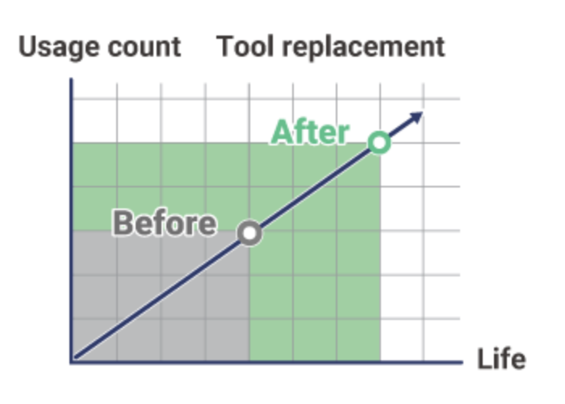
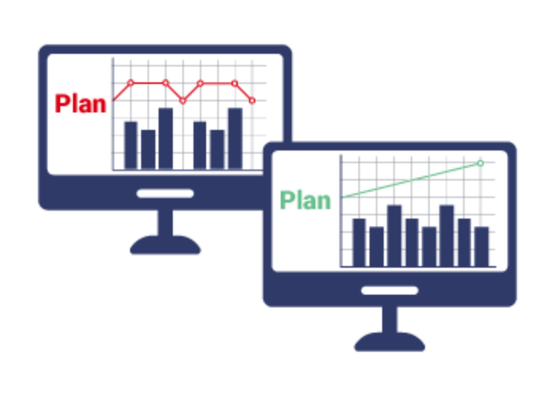
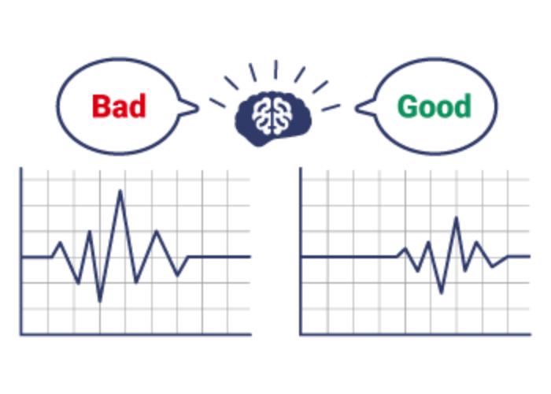

Katalog Produk
MELSOFT MaiLab

Apa itu MELSOFT MaiLab?
Perangkat lunak analisis data "MELSOFT MaiLab" memungkinkan pemanfaatan data tanpa pengetahuan khusus. Perangkat lunak ini memecahkan berbagai tantangan dan semakin meningkatkan manufaktur.
Apa yang dapat dilakukan MELSOFT MaiLab
Penggantian dengan teknologi
digital dan pemanfaatan data
Pembuatan otomatis menggunakan AI membuat para pemula dalam analisis data merasa nyaman.
Sangat baik untuk pemrosesan data bentuk gelombang
Analisis dan diagnosis dengan satu alat
Sangat cocok dengan peralatan Mitsubishi Electric FA
Tantangan yang dapat dipecahkan oleh MELSOFT MaiLab
Berbagai proses berdasarkan "pengalaman dan intuisi manusia"
Pengurangan biaya
Biasanya, waktu penggantian bahan habis pakai ditentukan berdasarkan waktu dan jumlah penggunaan.
Dengan MELSOFT MaiLab, dengan menganalisis dan mendiagnosis data bahan habis pakai, Anda dapat memahami kondisi bahan habis pakai dan menggantinya pada waktu yang optimal, sehingga menghasilkan pengurangan biaya.
Suksesi keterampilan dan penghematan tenaga kerja
Input parameter untuk peralatan manufaktur cenderung bergantung pada pengetahuan pekerja terampil.
Dengan menggunakan AI, dimungkinkan untuk mendigitalkan pengetahuan pekerja terampil, yang sulit didokumentasikan, dan mendukung transfer keterampilan kepada pemula.
Peningkatan produktivitas
Untuk mencegah kegagalan mendadak yang dapat menurunkan tingkat operasi, maka perlu dilakukan pemantauan status peralatan dan pemeliharaan sebelum kegagalan terjadi.
Dengan mendigitalkan status peralatan dan menganalisisnya dengan AI, kegagalan dapat diprediksi, sehingga meningkatkan produktivitas.
Peningkatan kualitas
Ketika operator manusia memeriksa kualitas produksi secara visual menggunakan data grafis, terjadi variabilitas manusia. Dengan melakukan pemeriksaan kualitas menggunakan AI, pemeriksaan terperinci tanpa variasi dapat dilakukan dan kualitas produk dapat ditingkatkan.
Kemudahan penggunaan MELSOFT MaiLab
MELSOFT MaiLab dapat dihubungkan ke situs dengan sekali sentuh tombol dan mudah diaplikasikan ke peralatan. Selain itu, aplikasi ini sangat cocok untuk peralatan Mitsubishi Electric FA, sehingga mudah digunakan pada peralatan.
Pengguna dapat ditambahkan, dan
sistem dapat
ditambahkan
ke peralatan pabrik.
Jika Anda ingin menambah jumlah pengguna analisis, memperluas peralatan di pabrik Anda, atau mengintegrasikan sistem diagnostik ke dalam peralatan produksi massal Anda, silakan beli lisensi tambahan. Anda dapat mengonfigurasi sistem agar sesuai dengan lingkungan Anda.
Saat menggunakan
peralatan Mitsubishi Electric FA
,
perangkat dapat
ditentukan secara langsung.
MELSOFT MaiLab memiliki afinitas tinggi dengan peralatan Mitsubishi Electric FA. Karena spesifikasi langsung perangkat yang kompatibel dapat dilakukan, penyebaran (pengaturan) perangkat juga dapat dilakukan dengan mudah.